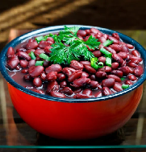

@_lucasdso
@_lucasdso @lucasdellasa
@lucasdellasa
Honestamente, nem eu sei... Há muitos anos já não sei quem eu sou, pra onde quero ir e como vou chegar, mas estou aqui. Acho que no fim das contas, buscamos algo que contemple o buraco que habita no nosso peito, mas seguimos buscando e criando quem achamos que somos. Se for com Deus e em uma vida feliz, onde eu possa ajudar os outros, ensinar os que precisam, alimentar e abrigar os que precisam, dar exemplo e melhorar para os que precisam. Sei lá... Só espero que esteja no caminho certo... Fiquem com essa foto de feijão (vermelho, claro), porque ele é bonito e gostoso, do jeito que espero que seja meu futuro 😊
Ah.. tem varios canais. Pega alguns aí:
@_lucasdso @lucasdellasa